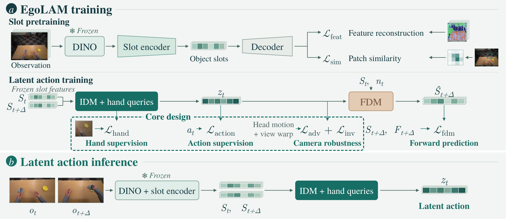

Egocentric vision · Robot learning
EgoLAM
Learning Latent Actions from Hand and Head Motion
A hand pushes a cup. A head turn shifts the cup across the image. EgoLAM uses measured wrist motion to teach a two-frame encoder which movement to carry into imitation.

The same window was masked in both frames. The percentage is its share of the total change in the action code across 25 placements.
Mean success on three LIBERO suites
Over direct behavior cloning
Held-out wrist decoding · mean R²
Method
Learning what the hands do.
Hand queries pool features from eight object slots. Measured wrist translation and rotation in the earlier head frame supervise the prediction from the latent action.

Results
From video to robot control.
For each task, every teacher labels the same 40 expert demonstrations. After pretraining, the policy and its action decoder learn from the expert commands for 2,500 updates.
Closed-loop success on LIBERO
Resources